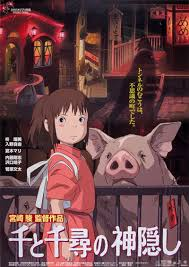

Forest Gump
純真なハートを持つ主人公ガンプが米国現代史３０年をまっしぐらに駆け抜ける感動の ヒューマンファンタジー。 第６７回アカデミー賞で作品賞や主演男優賞など６部門を受賞。 全米でガンプの生き方や価値観が“ガンピズム”と呼ばれ、社会現象級のブームを巻き起こした名作。
steins;gate

舞台は2010年夏の秋葉原。 厨二病から抜け出せない大学生の岡部倫太郎は、 「未来ガジェット研究所」を立ち上げ、用途不明の発明品を日々生み出していた。 だが、ある日、偶然にも過去へとメールが送れる「タイムマシン」を作り出す。 世紀の発明と興奮を抑えきれずに、興味本位で過去への干渉を繰り返すが…!?
千と千尋の神隠し

両親と共に引越し先の新しい家へ向かう10歳の少女、千尋。 しかし彼女はこれから始まる新しい生活に大きな不安を感じていた。 やがて千尋たちの乗る車はいつの間にか不思議の町へと迷い込んでしまう。 その奇妙な町の珍しさにつられ、どんどん足を踏み入れていく両親。 が、彼らは不思議の町の掟を破ったために豚にされてしまい......。